| GRADE | NAME | NOTES | NOTES TRANSPOSED IN C |
| I | NEAPOLITAN MINOR | 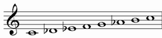 | |
| II | LYDIAN #6 | 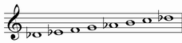 | 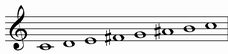 |
| III | MIXOLYDIAN AUGMENTED | |
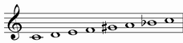 |
| IV | HUNGARIAN GIPSY | 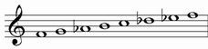 | 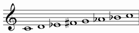 |
| V | LOCRIAN DOMINANT | 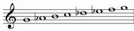 | 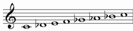 |
| VI | IONIAN #2 | 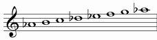 | 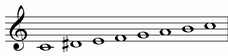 |
| VII | ULTRALOCRIAN bb3 | 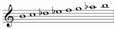 | 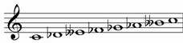 |
NEAPOLITAN MINOR |
Alternative names: Neapolitan Major flat 6, Harmonic Minor flat 2, Phrygian maj7
It starts from the first grade of neapolitan scale
| NEAPOLITAN | C | Db | Eb | F | G | A | B | C | |||||
| NEAPOLITAN MINOR | C | Db | Eb | F | G | Ab | B | C |
Structure: 1222131
| chords over first notes: | ||
| Triad: | Seventh chord: | Complete chord: |
| minor | minor with major seventh | |
 |
 |
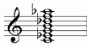 |
Chord simbols: Cm, Cm(maj7), Cm^(b9 b13)
Enharmonic chord simbols: Cm^(#5)
LYDIAN #6 |
Alternative names: Lydian sharp 6
It starts from the second grade of neapolitan scale
Structure: 2221311
| chords over first notes: | ||
| Triad: | Seventh chord: | Complete chord: |
| major | major seventh | |
 |
 |
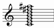 |
Chord simbols: C^, Cmaj7, Cmaj7(#11)
Enharmonic chord simbols: C^(b5), C7, C7(b5)
MIXOLYDIAN AUGMENTED |
Alternative names: Mixolydian sharp 5
It starts from the third grade of neapolitan scale
Structure: 2213112
| chords over first notes: | ||
| Triad: | Seventh chord: | Complete chord: |
| augmented | dominant with augmented fifth | |
 |
 |
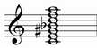 |
Chord simbols: C7(#5), C+7, C7(#5)
HUNGARIAN GIPSY |
Alternative names: Aeolian sharp 4
It starts from the fourth grade of neapolitan scale
Structure: 2131122
| chords over first notes: | ||
| Triad: | Seventh chord: | Complete chord: |
| minor | minor seventh | |
|
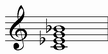 | 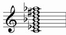 |
Chord simbols: Cm, Cm7, Cm7(#11 b13)
Enharmonic chord simbols: Cm7(b5), Cm7(#5)
LOCRIAN DOMINANT |
Alternative names: Locrian sharp 3, Oriental flat 6, Mixolydian flat 5 flat 9 flat 13, Mixolydian b2 b5 b6
It starts from the fifth grade of neapolitan scale
Structure: 1311222
| chords over first notes: | |
| Seventh chord: | Complete chord: |
| dominant with diminished fifth | |
 |
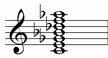 |
Chord simbols: C7(b5), C7(b5 b9), C7(b5 b9 b13)
Enharmonic chord simbols: C7(#5)
IONIAN #2 |
Alternative names: Ionian sharp 2
It starts from the sixth grade of neapolitan scale
Structure: 3112221
| chords over first notes: | ||
| Triad: | Seventh chord: | Complete chord: |
| major | major seventh | |
|
|
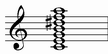 |
Chord simbols: Cmaj7, C^, C^(#9)
Enharmonic chord symbols: Cm^
ULTRALOCRIAN bb3 |
It starts from the seventh grade of neapolitan scale
Structure: 1122213
Enharmonic interpretation:
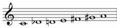